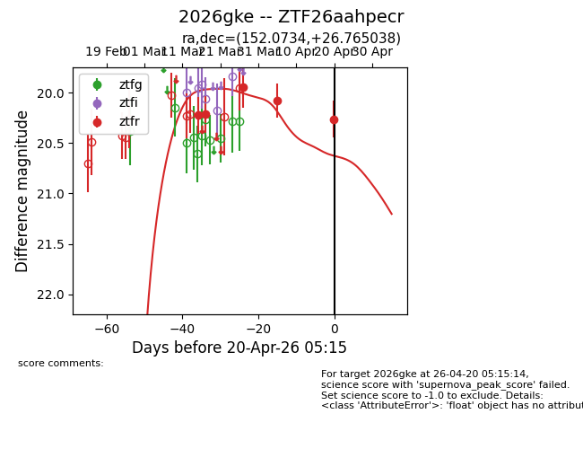
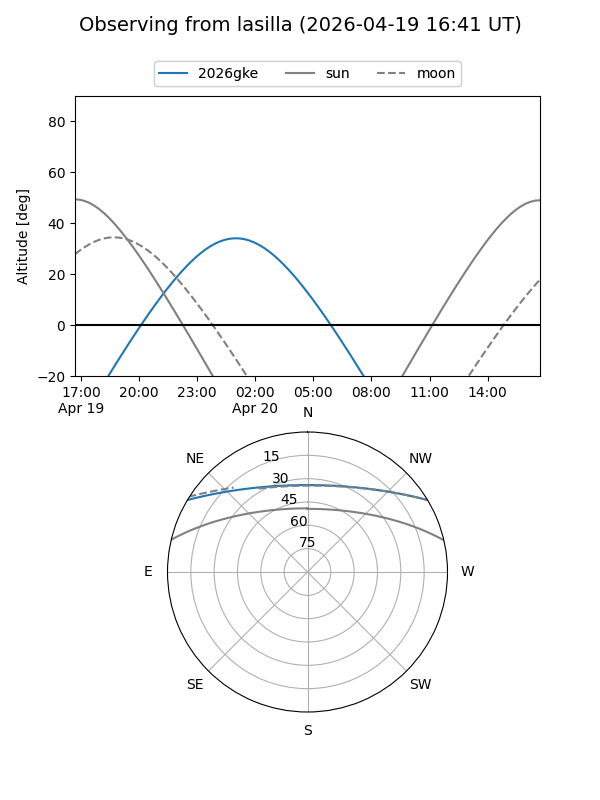
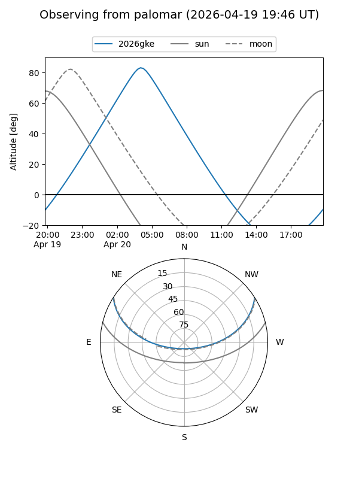
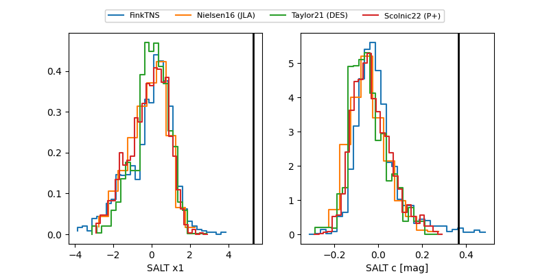

2026gke
Target 2026gke at 2026-04-20 05:25
Aliases and brokers:
FINK: link
Lasair: link
ALeRCE: link
TNS: link
YSE: link
alt names
ZTF26aahpecr (ztf,fink_ztf)
2026gke (tns,yse)
Coordinates:
equatorial (ra, dec) = 152.0734,+26.76504
equatorial (HMS+DMS) = 10:08:17.62,+26:45:54.14
galactic (l, b) = (203.9173,+53.80441)
Flags:
Photometry:
last ztfr=20.26
5 ztfr detections
Lightcurve

Visibility


Additional plots
